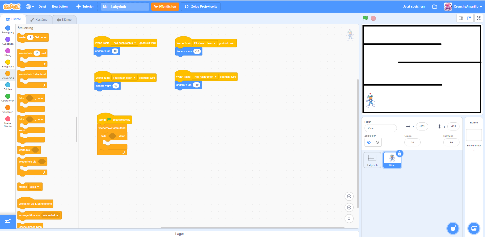
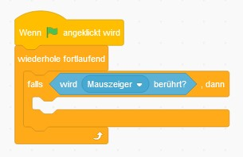
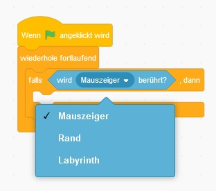
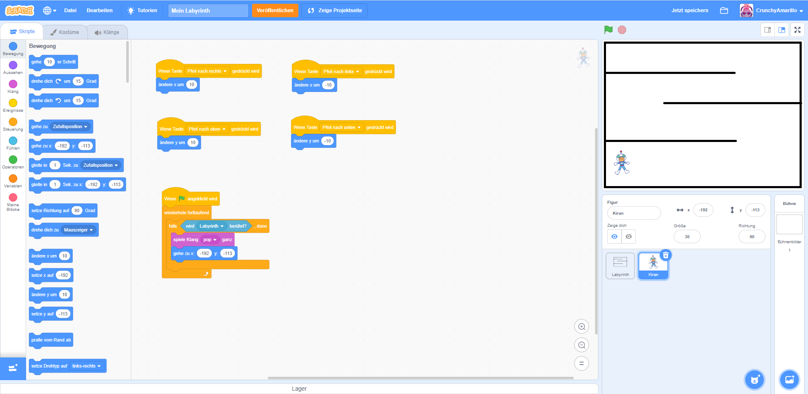
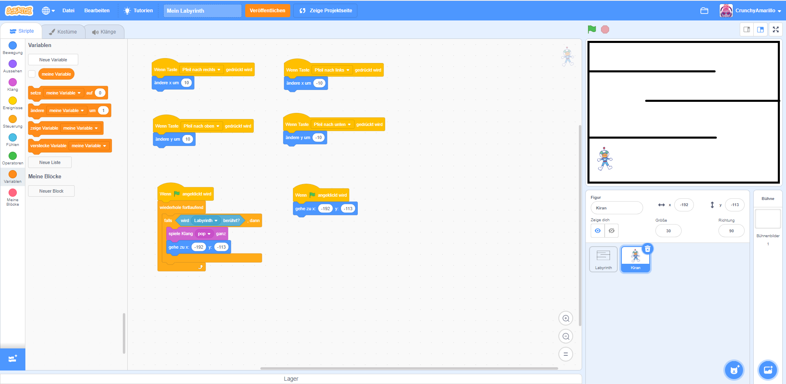
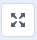
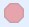

Du hast nun deinen Programmcode getestet und kannst deine Figur schon mit den Pfeiltasten bewegen.
Dabei ist dir sicherlich aufgefallen, dass deine Figur auch über die Wand des Labyrinths hinaus
laufen kann. Das wollen wir natürlich nicht und deshalb ergänzen wir jetzt etwas Programmcode um
genau dies zu verhindern.
Das Ziel soll dabei sein, dass die Figur immer, wenn sie das Labyrinth berührt, zurück zum
Startpunkt "gebeamt" wird. Außerdem lassen wir die Figur dabei ein lustiges Geräuch machen.
Um genau das beschriebene Ziel zu ereichen, gehst du wie folgt vor:
Suche dir in der Gruppe "Ereignisse" den Startblock heraus und ziehe ihn in das
Programm-Code-Fenster. Der Startblock trägt den Namen
Wenn (grüne Fahne) angeklickt wird. Als zweites benötigst du den Block
wiederhole fortlaufend. Diesen befestigst du im Programm-Code-Fenster direkt unterhalb
des Startblocks. Du findest den Block in der Gruppe "Steuerung". Ebenfalls in dieser Gruppe befindet
sich der Block falls < > dann. Wähle diesen Block als drittes, ziehe in in das
Programm-Code-Fenster und platziere den Block innerhalb des
wiederhole fortlaufend-Blocks.
Bist du fertig, sollte dein Programmcode so aussehen, wie auf dem folgenden Bild dargestellt.

Was macht dieser Programmcode nun? Er wird immer genau dann ausgeführt, wenn das Programm gestartet
wird. Dadadurch, dass wir den Block wiederhole fortlaufend wird alles, was sich
innerhalb dieses Blocks befindet dauerhaft ausgeführt. Das heißt alles was da drinsteht, wird immer
wieder vom Programm überprüft und ausgeführt. Der falls < > dann ist ein
Bedingungsblock. Er wartet darauf, dass irgendwas passiert um dann den Code auszuführen, der
innerhalb des Blocks platziert wird. Kannst du dir vorstellen, auf welche Bedingung der Block warten
muss?
In unserem Fall wartet er darauf, dass deine Figur einen Fehler macht und die Wand des Labyrinths
berührt. Das müssen wir dem Programm jetzt aber noch mitteilen. Dafür benötigen wir den
wird (Mauszeiger) berührt Block aus der Gruppe "Fühlen". Er befindet sich gleich ganz
oben. Diesen musst du jetzt im Bedingungsfeld des falls < > dann platzieren. Wenn
du fertig bist, dann sieht das Ganze in etwa so aus:

Wichtig ist nun noch, dass du die Voreinstellung von "Maustaste" auf den Namen deiner Labyrinth-Figur änderst. In meinem Fall ist das die Bezeichnung "Labyrinth". Bei dir kann der Name abweichen, falls du deinem Labyrinth eine andere Bezeichnung gegeben hast. 
Nun ist dein Programm bereit, wenn deine Figur die Wand berührt, weiteren Code auszuführen. Ergänze deshalb jetzt noch die folgenden Blöcke:
spiele Klang (...) ganz (Gruppe: Klang): wähle dir einen beliebigen Klang ausgehe zu x: (...) y: (...) (Gruppe: Bewegung): stelle hier für x und y die Werte der
Start-Position deiner Figur einWenn du fertig bist, sollte der Programmcode in deinem Programm-Code-Fenster so oder ähnlich aussehen: 
Eine Kleinigkeit müssen wir nun noch ergänzen: Wir wollen, dass sich deine Figur zurück auf ihre Startposition begibt, immer wenn das Programm neugestartet wird. Um dies sicherzustellen benötigen wir noch etwas mehr Programmcode. Suche dir folgende Blöcke heraus und platziere diese im Programm-Code-Fenster:
Wenn (grüne Fahne) angeklickt wird (Gruppe: Ereignisse)gehe zu x: (...) y: (...) (Gruppe: Bewegung): stelle hier für x und y die Werte der
Start-Position deiner Figur einHast du alle Blöcke korrekt eingefügt, dann sieht dein Programmcode nun so aus: 
Teste den neuen Code nun aus. Aktiviere den Vollbildmodus im Vorschaufenster . Stoppe zunächst dein Programm, falls dieses noch läuft über die Schaltfläche . Starte das Programm anschließend neu.